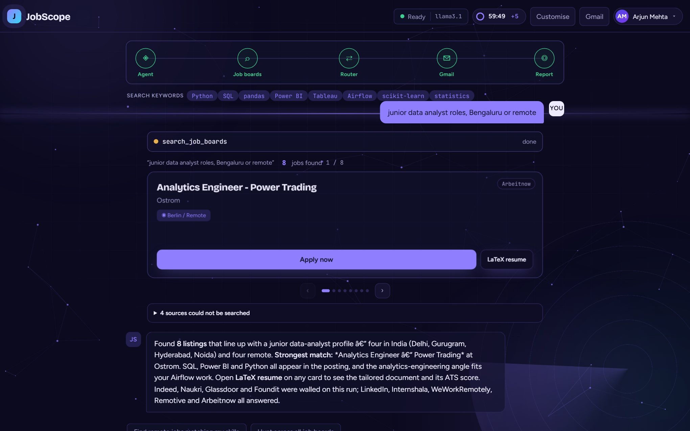
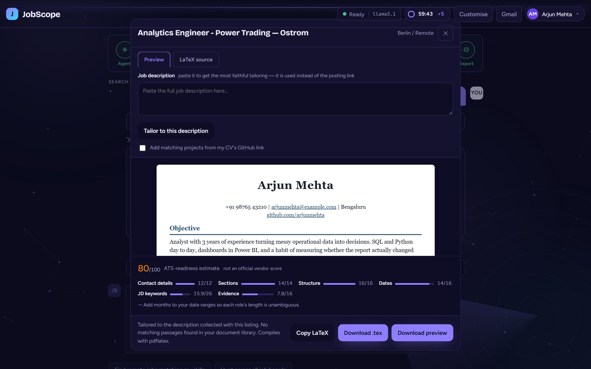

JobScope searches nine job boards in parallel, falls back to your Gmail job alerts when a board bot-walls it, and drafts a tailored, ATS-scored LaTeX resume for any posting worth applying to.
Python · FastAPI · SSE · LangGraph · MCP tools · SQLite · no cloud account required

Every capability below is in the repo and exercised by the tests — the dashboard is the front end of a LangGraph agent, not a mock-up.
Indeed, LinkedIn, Naukri, Glassdoor, Foundit, Internshala, WeWorkRemotely, Remotive and Arbeitnow run concurrently under a 40-second deadline, each reporting whether it answered or was blocked.
Sync job-alert mail once over OAuth into a local SQLite cache; when the boards block the run, a deterministic graph edge answers from that cache instead of pretending there are no jobs.
BM25 ranks your own CV bullets against the posting and reorders them. It emits a compilable .tex plus an HTML preview — the facts are yours, the emphasis is the posting's.
A 100-point score across contact, sections, structure, dates, keywords and evidence — each with a note saying what to fix, so the number is arguable instead of mystical.
Agent tokens, tool calls and results stream into the transcript while the circuit lights up; results land in a swipeable deck with Apply and LaTeX buttons.
Ollama for inference, SQLite for accounts, profiles and mail cache, scrypt password hashing. The only network calls are the boards, Gmail and GitHub APIs.
One message goes in; the agent decides whether to scrape, read mail, or both — and stops when it has something it can defend.

The generator reads the posting, ranks your bullets, and rebuilds the document. The ATS panel breaks the score down by component and names the keywords you are missing — here, four of eight.
The interesting part of a scraping tool is what it does when the scraping fails.